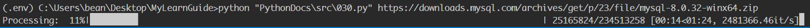

一个简单的带有进度条的下载小工具
# PythonDocs\src\030.py
import sys
import requests
from tqdm import tqdm
def download_package(archive_name, download_url):
with open(archive_name, "wb") as f:
response = requests.get(download_url, stream=True)
content_length = int(response.headers.get("Content-Length"))
with tqdm(desc="Processing", total=content_length, leave=True) as bar:
iter_size = 1 << 20
for chunk in response.iter_content(iter_size):
f.write(chunk)
bar.update(iter_size)
print("download %s successful!" % archive_name)
if __name__ == "__main__":
args = sys.argv[:]
if len(args) <= 1:
print("请使用download_cli 下载链接 [文件名] 下载对应文件")
raise
url = args[1]
if len(args) == 2:
download_name = url.rsplit("/", 1)[-1]
else:
download_name = args[2]
download_package(download_name, url)比如下载MySQL，执行效果： 